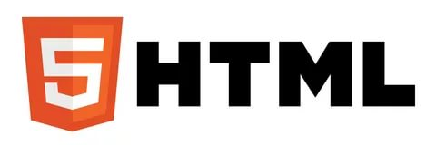
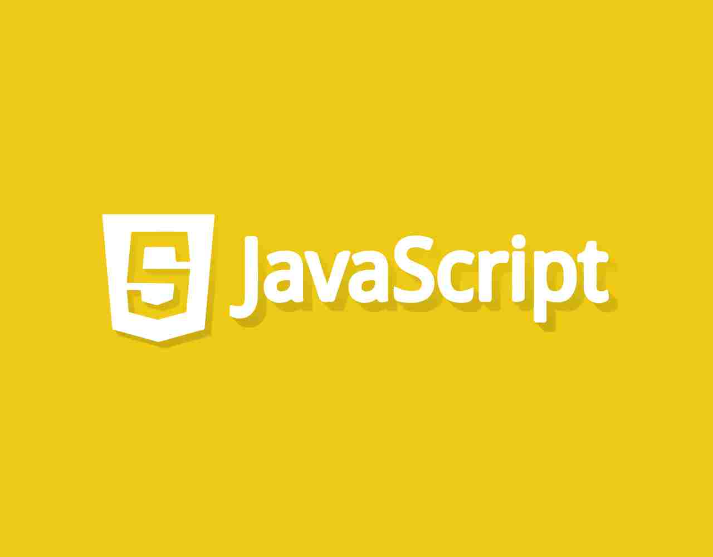
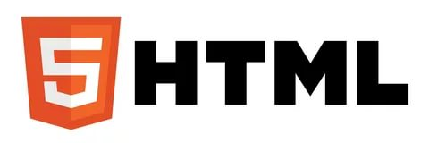
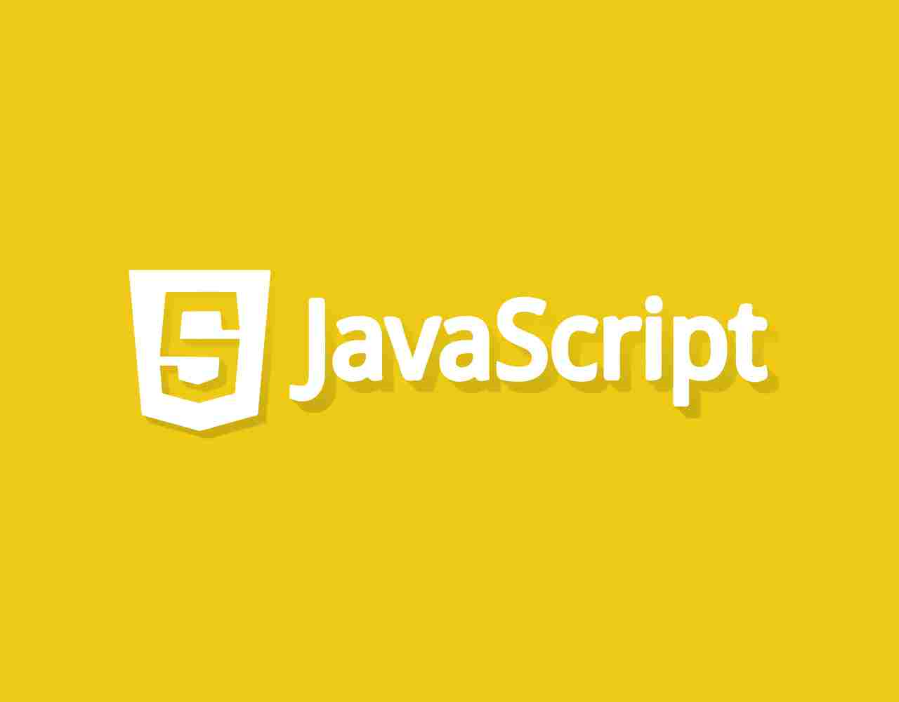

CSS Cascading Style Sheets — Каскадные Таблицы Стилей:КТС) — формальный язык описания внешнего вида документа, написанного с использованием языка разметки.
Преимущественно используется как средство описания, оформления внешнего вида веб-страниц, написанных с помощью языков разметки HTML и XHTML, но может также применяться к любым XML-документам, например, к SVG или XUL.
CSS используется создателями веб-страниц для задания цветов, шрифтов, расположения отдельных блоков и других аспектов представления внешнего вида этих веб-страниц. Основной целью разработки CSS являлось отделение описания логической структуры веб-страницы (которое производится с помощью HTML или других языков разметки) от описания внешнего вида этой веб-страницы (которое теперь производится с помощью формального языка CSS). Такое разделение может увеличить доступность документа, предоставить большую гибкость и возможность управления его представлением, а также уменьшить сложность и повторяемость в структурном содержимом.
Кроме того, CSS позволяет представлять один и тот же документ в различных стилях или методах вывода, таких как экранное представление, печатное представление, чтение голосом (специальным голосовым браузером или программой чтения с экрана), или при выводе устройствами, использующими шрифт
Способ подключения CSS к HTML:
<!DOCTYPE html>
<html>
<head>
.....
<link rel="stylesheet" type="text/css" href="style.css">
</head>
<body>
.....
</body>
</html>
Правила построения CSS
В первых трёх случаях подключения стилей CSS к документу (см. выше) каждое правило CSS из файла имеет две основные части — селектор и блок объявлений. Селектор, расположенный в левой части правила до знака «{» определяет, на какие части документа (возможно, специально обозначенные) распространяется правило. Блок объявлений располагается в правой части правила. Он помещается в фигурные скобки, и, в свою очередь, состоит из одного или более объявлений, разделённых знаком «;». Каждое объявление представляет собой сочетание свойства CSS и значения, разделённых знаком «:». Селекторы могут группироваться в одной строке через запятую. В таком случае свойство применяется к каждому из них.
селектор, селектор {
свойство: значение;
свойство: значение;
свойство: значение;
}
HTML (HyperText Markup Language — гипертекст разметка) — стандартизированный язык разметки документов во Всемирной паутине. Большинство веб-страниц содержат описание разметки на языке HTML (или XHTML). Язык HTML интерпретируется браузерами; полученный в результате интерпретации форматированный текст отображается на экране монитора компьютера или мобильного устройства.
Язык HTML до 5-й версии определялся как приложение SGML (стандартного обобщённого языка разметки по стандарту ISO 8879). Спецификации HTML5 формулируются в терминах DOM (объектной модели документа).
Язык XHTML является более строгим вариантом HTML, он следует синтаксису XML и является приложением языка XML в области разметки гипертекста.
Во всемирной паутине HTML-страницы, как правило, передаются браузерам от сервера по протоколам HTTP или HTTPS, в виде простого текста или с использованием шифрования.
Браузеры:
Текстовые документы, содержащие разметку на языке HTML (такие документы традиционно имеют расширение .html или .htm), обрабатываются специальными приложениями, которые отображают документ в его форматированном виде. Такие приложения, называемые «браузерами» или «интернет-обозревателями», обычно предоставляют пользователю удобный интерфейс для запроса веб-страниц, их просмотра (и вывода на иные внешние устройства) и, при необходимости, отправки введённых пользователем данных на сервер. Наиболее популярными на сегодняшний день браузерами являются Google Chrome, Mozilla Firefox, Opera, Internet Explorer и Safari
<!DOCTYPE html>
<html>
<head>
<meta charset="utf-8" />
<title>HTML Document</title>
</head>
<body>
<p>
<b>
Этот текст будет полужирным, <i>а этот — ещё и курсивным</i>.
</b>
</p>
</body>
</html>
Варианты DOCTYPE для HTML5
В HTML 5 используется только один вариант DOCTYPE:
<!DOCTYPE html>
JavaScript — мультипарадигменный язык программирования. Поддерживает объектно-ориентированный, императивный и функциональный стили. Является реализацией языка
ECMAScript
[Доп.]
JavaScript обычно используется как встраиваемый язык для программного доступа к объектам приложений. Наиболее широкое применение находит в браузерах как язык сценариев для придания интерактивности веб-страницам
Возможности языка:
JavaScript является объектно-ориентированным языком, но используемое в языке прототипирование обуславливает отличия в работе с объектами по сравнению с традиционными класс-ориентированными языками. Кроме того,
JavaScript имеет ряд свойств, присущих функциональным языкам — функции как объекты первого класса, объекты как списки, карринг, анонимные функции, замыкания — что придаёт языку дополнительную гибкость.
Несмотря на схожий с C(си) синтаксис,
JavaScript по сравнению с языком Си имеет коренные отличия:
объекты с возможностью интроспекции;
функции как объекты первого класса;
автоматическое приведение типов;
автоматическая сборка мусора;
анонимные функции.
В языке отсутствуют такие полезные вещи, как:
- стандартная библиотека: в частности, отсутствует интерфейс программирования приложений по работе с файловой системой, управлению потоками ввода-вывода, базовых типов для бинарных данных;
- стандартные интерфейсы к веб-серверам и базам данных;
- система управления пакетами, которая бы отслеживала зависимости и автоматически устанавливала их.
PHP (англ. PHP: Hypertext Preprocessor) — «PHP: препроцессор гипертекста»; первоначально [PHPT] Personal Home Page Tools — «Инструменты для создания персональных веб-страниц») — скриптовый язык общего назначения, интенсивно применяемый для разработки web-приложений. В настоящее время поддерживается подавляющим большинством hosting-провайдеров и является одним из лидеров среди языков, применяющихся для создания динамических web-сайтов.
Область применения:
В области веб-программирования, в частности серверной части, PHP — один из популярных сценарных языков (наряду с JSP, Perl и языками, используемыми в ASP.NET).
Популярность в области построения веб-сайтов определяется наличием большого набора встроенных средств и дополнительных модулей для разработки веб-приложений. Основные из них:
автоматическое извлечение POST и GET-параметров, а также переменных окружения веб-сервера в предопределённые массивы;
взаимодействие с большим количеством различных систем управления базами данных через дополнительные модули (MySQL, MySQLi, SQLite, PostgreSQL, Oracle (OCI8), Oracle, Microsoft SQL Server, Sybase, ODBC, mSQL, IBM DB2, Cloudscape и Apache Derby, Informix, Ovrimos SQL, Lotus Notes, DB++, DBM, dBase, DBX, FrontBase, FilePro, Ingres II, SESAM, Firebird / InterBase, Paradox File Access, MaxDB, Интерфейс PDO), Redis;
автоматизированная отправка HTTP-заголовков;
работа с HTTP-авторизацией;
работа с cookies и сессиями;
работа с локальными и удалёнными файлами, сокетами;
обработка файлов, загружаемых на сервер;
работа с XForms.
В настоящее время PHP используется сотнями тысяч разработчиков. Согласно рейтингу корпорации TIOBE, базирующемся на данных поисковых систем, в мае 2016 года PHP находился на 6 месте среди языков программирования. К крупнейшим сайтам, использующим PHP, относятсяFacebook, Wikipedia и др.
Входит в LAMP — распространённый набор программного обеспечения для создания и хостинга веб-сайтов (Linux, Apache, MySQL, PHP).
Создание GUI-Приложений:
PHP не ориентирован на создание приложений, но есть потребность в создании интерфейсов для настройки серверов, беспрерывного выполнения, отладки скриптов (сценариев), управления локальными и тестовыми серверами, и т.п. Из-за этого и возникли решения данной проблемы.
Расширения
Основное использование расширений — надстройки библиотек интерфейсов пользователя (UI-библиотек).
Расширения условно делятся на три группы:
Расширения PHP: WxPHP (Windows, Linux, macOS), Winbinder (Windows).
Обёртки, использующие системные функции средствами FFI: Win32Std, Tk ( реализация для Python).
Консольные обёртки для использования командного интерфейса (CLI): PHP-UI, PHP-XCB.
Разработаны расширения как двусторонняя обёртка для использования других языков при написании расширений PHP, и наоборот. Например, PSV Component Library, — проект, состоящий из трёх подпроектов:
PHP4Delphi реализует соединения PHP с программами, написанными на Delphi средствами WinAPI. Разрабатывался с 1999 года, но не обновлялся c 2009 года, из-за чего появились ответвления — форки — сторонние обновления, например, PHP4Lazarus.
PHP extensions development framework - средство создания расширений PHP, VCL-компоненты — неотъемлемая часть PHP4Delphi, базовые компоненты которой нужны для создания приложений.
php4Applications - расширение для использования PHP в других языках, базирующееся на PHP4Delphi, дающее доступ к макросам и упрощающее использование PHP, избавляя от создания обёртки.
Среды разработки:
Среды разработки (IDE):
Есть место и полноценным средам разработки для GUI PHP:
DevPHP:
Первопроходцем в этой категории является студия DevPHP-IDE, которая использовала Kylix(Delphi) в качестве основы интерфейса и php-cli для создания пользовательских программ.
Она включала в себя редактор кода, несколько инструментов и визуальный просмотр HTML-страниц.
Впервые была представлена в 2002 году, сейчас имеет 3 стабильные версии, но разработка не продолжается — остановилась из-за гибели главного разработчика в автокатастрофе.
CodeGear Rad Studio (Расширение):
После DevPHP IDE появилось расширение - набор компонентов для CodeGear Rad Studio 2009 на базе php4delphi с некоторыми улучшениями (веб-элементы, инспектор, отладчик), поддержка её длилась в течение четырёх версий, вторая из которых вошла в платное расширение Rad Studio 2010: была возможность использовать скрипты, задавать стиль веб-компонентам, просматривать стили и веб-страницы до сборки программы, запускать локальный сервер, собирать программу, как отдельное приложение и отлаживать код. С выходом Delphi XE, расширение получило название RADPHP Xe. Далее, сама студия стала называться Embarcadero Delphi, и работа над данным расширением была приостановлена на неопределённый срок.